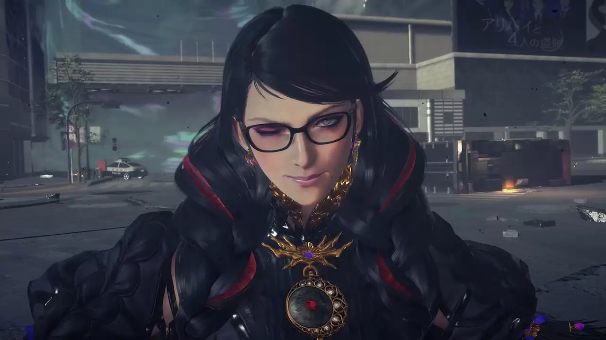

Tentang Bayonetta (Cereza)
Bayonetta adalah tokoh utama/protagonis. Dia adalah Penyihir Umbra yang penuh gaya dan misterius yang memiliki bakat luar biasa dalam seni peluru. Setelah 500 tahun tertidur di peti mati yang terendam di dasar danau dan terbangun tanpa ingatan apa pun selain statusnya sebagai penyihir, Bayonetta berjuang untuk menemukan kebenaran tentang masa lalunya.